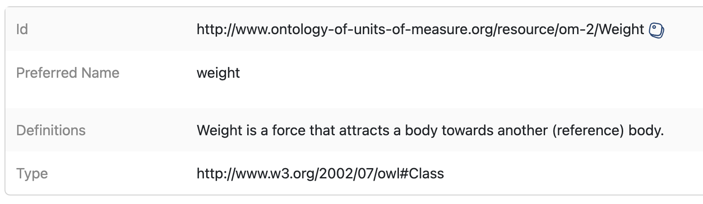

All in One View
Content from Introduction
Last updated on 2026-09-04 | Edit this page
Estimated time: 15 minutes
Overview
Questions
- Does FAIR data mean open data?
- What are Digital Objects and Persistent Identifiers?
- Different types of PIDs
Objectives
- Understand that the FAIR principles are fundamental for Sustainable Science
- Know what human and machine-friendly digital objects are
1. Does FAIR data mean open data?
No.
FAIR means human and machine-friendly data sources which aim for
transparency in science and future reuse.

What does it mean to be machine-readable vs human-readable?
Human Readable: > “Data in a format that can be conveniently read by a human. Some human-readable formats, such as PDF, are not machine-readable as they are not structured data, i.e., the representation of the data on disk does not represent the actual relationships present in the data.”
Machine Readable: > “Data in a data format that can be automatically read and processed by a computer, such as CSV, JSON, XML, etc. Machine-readable data must be structured data. Compare human-readable. Non-digital material (for example, printed or hand-written documents) is not machine-readable by its non-digital nature. But even digital material need not be machine-readable. For example, consider a PDF document containing tables of data. These are definitely digital but are not machine-readable because a computer would struggle to access the tabular information - even though they are very human-readable. The equivalent tables in a format such as a spreadsheet would be machine-readable. As another example, scans (photographs) of text are not machine-readable (but are human-readable!) but the equivalent text in a format such as a simple ASCII text file can be machine-readable and processable.”

Machine friendly = Machine-readable + Machine-actionable + Machine-interoperable
During this sourcebook, we will be using “Machine-readable” and “Machine friendly” interchangeably. We like the term “friendly” since it can also include “machine-actionability” and “machine-interoperability.”
2. What are Digital Objects and Persistent Identifiers?
A Digital Object is a bit sequence located in a digital memory or storage that has, on its own, informational value. For example:
- A Scientific Publication
- A Dataset
- A Rich Metadata file
- A README file containing Terms of use & Access Protocols

To learn more about FAIR Digital Objects
- FAIR Digital Objects: Which Services Are Required? (Schwardmann, Ulrich 2020)
- FAIR Digital Object Framework Documentation (BdSS, Luiz Olavo 2020)
A Persistent Identifier (PID) is a long-lasting reference to a (digital or physical) resource:
- Designed to provide access to information about a resource even if the resource it describes has moved location on the web
- Requires technical, governance, and community support to provide the persistence
- There are many different PIDs available for many different types of scholarly resources, e.g., articles, data, samples, authors, grants, projects, conference papers, and so much more
Video: The FREYA project explains the significance of PID: LINK
Different types of PIDs
PIDs have community support, organizational commitment, and technical infrastructure to ensure the persistence of identifiers. They are often created to respond to a community’s needs. For instance, the International Standard Book Number or ISBN was created to assign unique numbers to books, is used by book publishers, and is managed by the International ISBN Agency. Another type of PID, the Open Researcher and Contributor ID or ORCID (iD), was created to help with author disambiguation by providing unique identifiers for authors. The ODIN Project identifies additional PIDs along with Wikipedia’s page on PIDs.
In Episode 6 (Data Archiving), you will explore one type of PID, the DOI (Digital Object Identifier), which is usually the standard PID for Datasets and Publications.
arXiv
arXiv is a preprint repository for physics, math, computer science, and related disciplines. It allows researchers to share and access their work before it is formally published.
Visit the arXiv new papers page for Machine Learning. Choose any paper by clicking on the ‘pdf’ link. Now use control + F or command + F and search for ‘HTTP’.
Did the author use DOIs for their data?
Authors will often link to platforms such as GitHub where they have shared their software, and/or they will link to their website hosting the data used in the paper. The danger is that platforms like GitHub and personal websites are not permanent. Instead, authors can use repositories to deposit and preserve their data and software while minting a DOI. Links to software sharing platforms or personal websites might move, but DOIs will always resolve to information about the software and/or data. See DataCite’s Best Practices for a Tombstone Page.
DOIs are everywhere, examples:
- Resource IDs (articles, data, software, …)
- Researcher IDs
- Organization IDs, Funder IDs
- Project IDs
- Instrument IDs
- Physical sample IDs,
- DMP IDs…
- Media: videos, images, 3D models
- FAIR means human and machine-friendly data sources which aim for transparency in science and future reuse.
- DOI (Digital Object Identifier) is a type of PID (Persistent Identifier)
Content from Set up your own terms
Last updated on 2026-09-04 | Edit this page
Estimated time: 25 minutes
Overview
Questions
- What are Data Terms of Use?
- What must a Data Terms of Use statement contain?
- What format should Data Terms of Use be?
- Are there standard Licenses we can pick from?
Objectives
- The participant will understand what data terms of use are with examples.
- The participant will be able to create basic data terms of use.
FAIR principles used in Data Terms of Use:
Accessible
FM-A2 (Metadata Longevity) → doi.org/10.25504/FAIRsharing.A2W4nzReusable
FM-R1.1 (Accessible Usage License) → doi.org/10.25504/FAIRsharing.fsB7NK
1 What are Data Terms of Use?
Data Terms of Use is a textual statement that sets the rules, terms, conditions, actions, legal considerations, and licenses that delineate data use.
An example is:

The World Bank - Terms of Use for Datasets → LINK TO EXAMPLE
Looking at the example, we can identify general elements in the Data Terms of Use statement. For instance, a broad description of the data is referred to, but also under what type of license the user is allowed to reuse.
Sometimes as part of our research, we use commercial databases. We should be careful always to read the conditions for using it for research purposes.
An example is:

Terms of Use - Numbeo.com → LINK TO
EXAMPLE
We can see that clause 3 of Licensing of content requests work
attribution.
2 What must a Data Terms of Use statement contain?
As a general rule, a Data Terms of Use statement must contain at least the following:
| Section | Description | Example |
|---|---|---|
| Description | What is this statement about and what Digital Objects are referred to | The following Terms of Use statement is about my happy dataset |
| License | Statement under which conditions a requester is allowed to use the data source | The happy dataset is of Public Domain |
| Work attribution | Statement requesting citation of the data source used | Could you please cite my happy dataset? |
| Disclaimer | Any consideration that the requester should be aware of | The last 100 records of my happy dataset might have selection bias |
Nevertheless, depending on the use case, the “Data Terms of Use” statement can be extended by adding specific clauses when complex data, multiple databases, or sensitive data are involved. After all, the “Data Terms of Use” statement is the legal basis of the referred data source. i.e., in the light of public law, you can make someone liable for not complying with specific clauses of the statement.
Moreover, sometimes our work is conducted within the context of a greater scientific funded project. Therefore, it is always recommended to check with the Principal Investigator or Project Manager whether the Data Terms of Use statement is to be defined or if there is already a Data Policy framework.
An example is:
Policy for use and oversight of samples and data arising from the Biomedical Resource of the 1958 Birth Cohort (National Child Development Study) → LINK TO EXAMPLE
- Link to the original Data Policy
This policy framework creates comprehensive guidelines on handling data for that specific study involving children’s data. Therefore, the researchers working underneath the project do not have to make new Data Terms of Use.
“Data Terms of Use” statement is the legal basis of the referred data source
In the light of public law, you can make someone liable for not complying with specific clauses of the statement.
3 What format should Data Terms of Use be?
The Data Terms of Use is a plain text statement.
This text has the length and depth that the data owner or data manager
sees fit. There is no right or wrong when drafting it. Usually, it is
recommended to store this textual statement in a README
file, using an accessible format, for example, .txt,
.md, or .html so that any user can read it
without needing any additional software.
The Data Terms of Use is a plain text statement written in a machine-friendly format
The “Data Terms of Use” can be drafted using any application (e.g.,
MS Word). However, it’s important to store it in a machine-friendly
format such as .txt or .md
Any text editor software would do the trick, such as Notepad++ or Sublime Text, but also you can
write it using Microsoft Word or Google Docs and save it as
.txt
Terms of Use
Visit the landing page of the following terms of use github.com/CityOfPhiladelphia/terms-of-use/blob/master/LICENSE.md
1. Can you tell what type of data it is about?
2. Can you tell in what format the terms of use are written?
3. What platform are they using to put it?
- Refers to the public code on which the large city of Philadelphia
government is based (https://www.phila.gov/)
- The format is Markdown (
.md)
- They used Github to put the
LICENSE.mdfile, which is the Data Terms of Use.
The Data Terms of Use needs to be in the same root
folder as the data source. When it comes to a database - like the World
Bank example - it should be findable on the project’s website. Moreover,
if there is no official project website, you should include it in
.md format in a Github repository like the following
example: → LINK
TO EXAMPLE

In Episode
4 (Data Archiving), we will explore that some data repositories such
as DataverseNL allow you to create a Data
Terms of Use statement directly on the platform when you create a data
project.
By default, you get a waiver License CC0
“No Rights Reserved”. Putting a database or dataset in the public
domain under CC0 is a way to remove any legal doubt about whether
researchers can use the data in their projects. Although CC0 doesn’t
legally require data users to cite the source, it does not affect the
ethical norms for attribution in scientific and research communities.
Moreover, you can change this waiver to a tailored Terms of Use you have
created for your data.

Editing Terms of Use
Is it possible to edit the Terms of Use in DataverseNL?
Go to DataverseNL/ to the FAQ section to find out.
Yes, it is possible. However, you can’t choose it at the beginning. After creating a dataset, go to the ‘Terms’ tab on your dataset page and click ‘Edit Terms requirements’. Next, select the radio button ‘No, do not apply CC0 public domain dedication’, and fill in the text fields with your terms and conditions.
Dataverse also provides Sample Data Usage Agreement → LINK
4 Are there standard Licenses we can pick from?
Yes, there are two general License frameworks that can work for data.
Creative Commons (CC) provides several licenses that can be used with a wide variety of creations that might otherwise fall under copyright restrictions, including music, art, books, and photographs. Although not tailored for data, CC licenses can be used as data licenses because they are easy to understand. Its website includes a summary page HERE outlining all the available licenses, explained with simple visual symbols.
| Permission Mark | What can I do with the data? |
|---|---|
| BY | Creator must be credited |
| SA | Derivatives or redistributions must have an identical license |
| NC | Only non-commercial uses are allowed |
| ND | No derivatives are allowed |
Open Data Commons (ODC) provides three licenses that can be explicitly applied to data. The web pages of each of these licenses include human-readable summaries, with the ramifications of the legalese explained in a concise format.
License Type
Pick a License at creativecommons.org
with the following conditions:
- Others cannot make changes to the work since it’s simulation data - If
someone wants to use the simulation data for a startup, they can
What type of license is it?
Attribution-NoDerivatives 4.0 International
Scenario:
You are a sociology and statistics researcher, and now you are
collaborating with a researcher from the hospital. Your collaborator
researches Children’s Mental Health. You will combine expertise and
conduct a study on the Quality of Life in Children. In addition, you
will lead a national survey in Dutch schools. You are thinking of
collecting information about bullying, social media, and family
structure.
Discuss with your team what considerations need to be taken into account when drafting a Data Terms of Use for this study. Do you think a legal expert must write the terms of use, or can it be done by the researchers?
- The Data Terms of Use statement is the legal basis of the referred data source.
- A License is the bare minimum requirement for Data Terms of Use.
- If a standard License does not fit your project, then you can use Terms of Use layouts e.g. Sample Data Usage Agreement.
Content from Speak the same language
Last updated on 2026-09-10 | Edit this page
Estimated time: 25 minutes
Overview
Questions
- What are Data Descriptions?
- How to reuse Data Descriptions?
- Are there standard ways for doing Data Descriptions?
- What is the relation between Data Descriptions and Linked Data?
Objectives
- The participant will learn that Data Descriptions are named differently in various fields.
- The participant will be able to create a machine-friendly Data Descriptions file.
FAIR principles used in Data Descriptions:
Interoperable
FM-I1 (Use a Knowledge Representation Language) → doi.org/10.25504/FAIRsharing.jLpL6i
FM-I2 (Use FAIR Vocabularies) → doi.org/10.25504/FAIRsharing.jLpL6i
Reusable
FM-R1.3 (Meets Community Standards) → doi.org/10.25504/FAIRsharing.cuyPH9
1. What are Data Descriptions?
Data descriptions are a detailed explanation and documentation of each data attribute or variable in a dataset.
Depending on the use case and field of research, these data
descriptions are also known as:
- Codebooks (e.g., in Statistics or Social Sciences) - Data Dictionaries
(e.g., in Computer and Data Science) - Labels or Data Tags (e.g., in
Crowdsourcing or Humanities) - Data Glossary (e.g., in Business
Administration & Finance) - Metadata (wrong use of this term in this
context)
For example:
| Variable Name | Description | Scale |
|---|---|---|
| Weight | Weight of a human | kilograms |
| Height | Height of a human | centimetres |
| Age | Age of a human | years |
| Blood Glucose Level | Blood glucose level of a human | mg/dl |
“Data Descriptions” is sometimes named differently depending on the field
No matter what terminology you use, “Data Descriptions” always refers to a detailed explanation and documentation of each data attribute or variable in a dataset.
2. How to reuse Data Descriptions?
Documentation of any kind always takes time. However, we shall always
aim to reuse existing data descriptions generally accepted in the
community. i.e., the variable Weight is a concept that has
been widely used in research; therefore, we don’t need to redefine it
every time.
For example, in BioPortal, we can find
existing descriptions of Weight. These descriptions belong
to an Ontology,
i.e., a community-accepted online dictionary for curated terms and
definitions. Moreover, it provides a globally unique identifier to the
description. → LINK TO
EXAMPLE

You will get several results when searching for a term and its definition. These results regard the different ontologies that define these terms. For example, think of the description of an apple. It might be defined differently in a British dictionary than in an American one.

Finally, using this Ontology, you can get a standard definition that community experts curate has a global identifier.

Describe your data by reusing Ontology terms
By reusing Ontology terms or community-accepted vocabularies, we aim
to create a culture of recycling definitions by default.
Advantages
- We don’t have to redefine the terms every time - We get a permanent
link to the resource - Since it uses a global identifier becomes easier
for others to integrate with different data sources
Disadvantages
- Sometimes, you might not find an Ontology or vocabulary that fits your
variable.
3. Are there standard ways for doing Data Descriptions?
There are no standard ways of doing Data Descriptions.
The minimum elements you need to describe your dataset are the
Variable Name and the Link to
Description. You can do that in a tabular format. However,
following the FAIR principles of Interoperability and Reusability, we
must ensure that the data is described using community standard FAIR
vocabularies. Here are some Ontologies for general use that can cover a
wide variety of data attributes
| Ontology | Link |
|---|---|
| Schema.org | LINK |
| DBpedia | LINK |
| Data Catalog Vocabulary (DCAT) | LINK |
| Dublin Core | LINK |
There are also public registries where you can find Ontologies
Linked Open Vocabularies → lov.linkeddata.es/dataset/lov/
EU Vocabularies: → op.europa.eu/en/web/eu-vocabularies
BioPortal: → bioportal.bioontology.org/
AgroPortal: → agroportal.lirmm.fr/
EcoPortal → ecoportal.lifewatchitaly.eu/
Ontology Lookup Service by the EBI → ebi.ac.uk/ols/index
Bioschemas → bioschemas.org/
Bioportal
Visit BioPortal.
BioPortal is the most known repository for biomedical ontologies.
Search for an Ontology term for blood glucose level In the
“Search for a class” search box.
Select one result related to a clinical measurement that is sound to
you.
What are the definition and ID?
Definition: Measurement of the amount of glucose, the monosaccharide
sugar, C6H12O6, occurring widely in plant and animal tissues which is
one of the three dietary monosaccharides that are absorbed directly into
the bloodstream during digestion, is the end product of carbohydrate
metabolism, and is the chief source of energy for living organisms, in a
specified volume of blood, the fluid that circulates through the heart,
arteries, capillaries and veins carrying nutrients and oxygen to the
body tissues and metabolites away from them.
ID: http://purl.obolibrary.org/obo/CMO_0000046
The Data Descriptions (or data dictionaries in some
domains) are usually manually written in a tabular format. This document
has the length and depth that the data owner sees fit. The general rule
of thumb is to describe the dataset related to a publication. Any
accessible format like .csv, .xls, or similar
is acceptable.

In case it is a database, a data model must be included in
machine-readable format (e.g., .sql) and a human-friendly
diagram (e.g., ER model on .pdf).
There are examples where data descriptions are made available in a
human-relatable manner, such as the dataset nutrition labels
style (Holland et al.,
2018).
An example is A Statutory Article Retrieval Dataset →
LINK
TO EXAMPLE
Moreover, there are tools and software packages to generate automated
“Codebooks” by only looking at the dataset
An example is Automatic Codebooks from Metadata Encoded in
Dataset Attributes → LINK TO EXAMPLE.
{kind=link}
These initiatives are helping us standardize data descriptions and are “Human Friendly”, which works perfectly. However, the FAIR principles FM-I1, FM-I2 and FM-R1.3 explicitly mention the need for Linked Data formats in order to gain the maximum level of Interoperability.
4. What is the relation between Data Descriptions and Linked Data?
When we create comprehensive Data Descriptions reusing terminologies of existing Ontologies, we could make available our dataset in a Linked Data format which makes it Interoperable with other datasets out there.
Imagine your dataset can be helpful to another researcher in the future. The future researcher can reuse your dataset and combine both by matching variable names with the Ontology identifiers.
There are several tools that help you to convert your dataset from a conventional format into a Linked Data format (e.g., RDF format).
| Tool | Source | GUI | Note |
|---|---|---|---|
| Open Refine | LINK | ✅ | Installation can be a hassle and takes a lot of memory |
| RMLmapper | LINK | ❌ | Highly technical you need to know command line tools, preferred option of data engineers |
| SDM-RDFizer | LINK | ❌ | You need to be familiar with programming languages |
| SPARQL-Generate | LINK | ✅ | It is a good option if you are going to invest time in it since you can learn SPARQL language |
| Virtuoso Universal Serve | LINK | ✅ | It’s nice but you have to pay for a license |
| UM LDWizard | LINK | ✅ | It’s free, gets the job done quickly, and you can publish data if you have a TriplyDB account → RECOMMENDED |
Challenge
Transform a dataset from XLSX format to RDF format using UM
LDWizard
Download the following mock dataset: MOCK DATA
What ontology terms did you reuse to describe the data attributes?
There is no one single answer 🤓
Marine Biology Scenario
You are a marine biology researcher, your group has discovered new organisms, and it’s time to create data descriptions. However, there are no available Ontologies to describe the data records, given that they are new scientific discoveries.
Discuss with your team what the researcher should do given that apparently there are no available Ontologies to describe their data.
- ‘Codebook’, ‘data glossary’, or ‘data dictionary’ are some other ways to name Data Descriptions.
- Ontologies (in information science) are like public online vocabularies of community curated terms and their definitions.
- By reusing Ontology terms or community accepted vocabularies, we aim to create a culture of recycling terminology by default.
Content from Securely share
Last updated on 2026-09-10 | Edit this page
Estimated time: 25 minutes
Overview
Questions
- What are data access protocols?
- Is Open Access a data access protocol?
- Can I expose my data as a service using FAIR API protocols?
Objectives
- The participant will learn what data access protocols are.
- The participant will explore the aspects of an access protocol for humans and machines.
FAIR principles used in Data Access Protocols:
Accessible
FM-A1.1 (Access Protocol) → doi.org/10.25504/FAIRsharing.yDJci5
FM-A1.2 (Access Authorization) → doi.org/10.25504/FAIRsharing.EwnE1n
Interoperable
FM-I3 (Use Qualified References) → doi.org/10.25504/FAIRsharing.B2sbNh
1. What are Data Access Protocols?
Data Access Protocols are a set of formatting and processing rules for data communication. In practice, Data Access Protocols are the explicit instructions for humans and machines to access a data source.
Imagine you enter a security room. You need to follow specific steps or possess specific keys for accessing the room. The same is with data. Moreover, if the door of the room is open we can say it is Open Access.

Following the premise that “Data Access Protocols” are a common set of rules in a standard language, they exist in various ranges. For example, some messages are directed to humans, and some protocols are meant for machines.
| Access Protocol | Example | Note |
|---|---|---|
| Communication between machines |  |
A PC requesting information using HTTP protocol |
| Communication between humans |  |
Data owner requesting users to contact directly for data access |
Image: Mapping EU Company Mobility & Abuse-Detection → LINK TO EXAMPLE
In a strict sense, data access protocols relate to network protocol definitions. However, regarding Research Data, the human factor plays a part. Therefore, we can explicitly mention the rules and instructions for accessing data depending on the use case. Sometimes the data can’t be publicly available, and there is no particular repository for it. Therefore, you request the user to contact you to get access. We could say it is a human-friendly access protocol.
For example:
In Data Request Form UMC Utrecht → LINK
TO EXAMPLE
The University Medical Center at Utrecht (UMC Utrecht) has an open
data request form for users to access clinical data for
research purposes. The form asks general things related to the
researcher’s identification and affiliation, research context, and
methodologies. Furthermore, they explicitly mention that the Data
Access Committee will review and consider applications and respond
within 4 weeks.
Protocols are like standard rules communicated in a standard language for humans and machines.
We humans predominantly use the English language for communication in science.
Likewise, Machines need a “medium” to talk to each other such as an API (Application Programming Interface), and they use a “communication language” such as HTTP Hypertext Transfer Protocol to share information between one another.
Relevant API protocols are:
2. Is Open Access a data access protocol?
Open Access is a policy framework in the strict sense but yes! We could say it’s a data access protocol. Within the Open Science recommendations, it is endorsed to standardize open access datasets when it is possible to make them publicly available and does not violate legal or ethical considerations. More information at Open Access.
Depositing datasets in public data repositories can grant them open access protocol automatically. In addition, data repositories typically work as a data archiving instrument, which we cover in Episode 6 (Data Archiving).
Moreover, Open Access data sources can be made available using FAIR protocols such as SPARQL API endpoints.
An example is:
The European Union Public Data → LINK TO EXAMPLE
Which makes available all public datasets. The following endpoint
(permanent link) https://data.europa.eu/sparql

Challenge
Go to ZENODO Covid 19 Community.
Can you tell what is the default “Data Access Protocol” for the Digital Objects displayed?
It is Open Access. It is indicated in the green tag on top of the titles.
Open Access is a human and machine-friendly Data Access Protocol
Humans see a “Download” button
Machines see an HTTPS request
3. Can I expose my data as a service using FAIR API protocols?
Yes, it is possible; however, it is not an easy road and requires
technical skills.
We must remember that exposing data as a service would mean we need a
server to host it, which we don’t always have. Moreover, one of the main
motivations to expose our data using FAIR protocols is to make it
accessible for other data sources to integrate. But for that, you would
need some basic understanding of Knowledge
Graphs technologies. More information about this can be found in the
FAIR
Elixir Cookbook.
| Tool | Source | GUI | Note |
|---|---|---|---|
| TriplyDB | LINK | ✅ | Free account, you can expose your data on their servers for a limited time |
| GraphDB | LINK | ✅ | Nice interface; you need to rely on a server |
| FAIR Data Point | LINK | ❌ | Highly technical, requires programming language knowledge |
| RDFlib Endpoint | LINK | ❌ | Requires familiarity with terminal, but is the quickest way to get started |
Important!
When you expose your data using FAIR API protocols, you must register your service in a registry for FAIR APIs such as SMART API
Challenge
Expose your RDF data to a service endpoint using a FAIR API protocol
- Use the RDF data you generated in Episode 2 (data descriptions) else you can download it here
- In your terminal, install the following library using the default
Python installation
pip install rdflib-endpoint@git+https://github.com/vemonet/rdflib-endpoint@main
- Next, execute the following command to locally expose your data
rdflib-endpoint serve data-file.nt
This exercise is optional
Data Access Scenario
You are a researcher of Sustainable Investment from the Economics
department. After your research, you ended up possessing sensitive
financial information of company figures that cannot be disclosed since
competitors could misuse this information. You will store the data in a
secure environment but you would like to make it available for research
purposes.
Note: The data is not about personal data.
Discuss with your team what type of access protocols shall be considered in this case.
- Data Access Protocols are a set of formatting and processing rules for data communication. For example, imagine you enter a security room. You must follow certain steps or possess keys to access the room.
- When you expose your data using FAIR protocols, you must register your service in a registry for FAIR APIs such as SMART API.